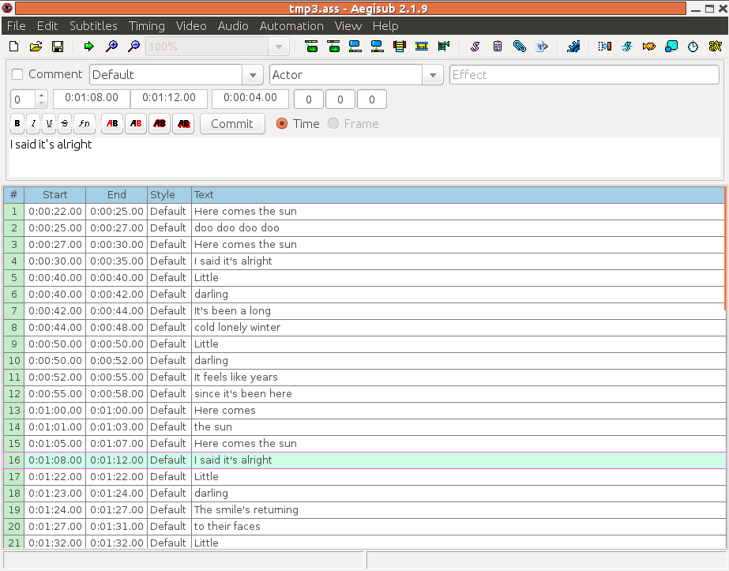
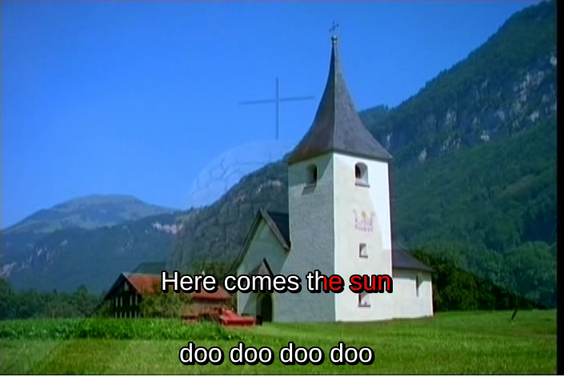

Many Karaoke systems use subtitles imposed over a movie of some kind. This chapter looks at how to do this with Linux systems. There are limited choices, but it is possible.
Programs like kmid and my Java programs
play lyrics on some sort of canvas object. This gives
a pretty boring background.
Video CDs or MPEG 4 files have a nicer background, but
have the lyrics hard-coded
onto the background video so there is little chance
for manipulation of them.
CD+G files keep the lyrics separate from the video
but there doesn't seem to be any way of playing them
directly from Linux. They can be converted to MP3+G
and these can be played by vlc:
load the MP3 file and it will pick up the corresponding
.cdg file.
This chapter considers subtitles that can be created independently, combined with video and audio in some way and then played. The current situation is not completely satisfactory.
We are concerned here with what are called "soft subtitles" where the subtitles are stored in a separate file to the video or audio and are combined during rendering. The Wikipedia page Subtitle (captioning) is a long article going into many issues about subtitling. It also contains a list of subtitle formats, but the one that seems to be of most use in in this context is SubStation Alpha.
According to the MPlayer page
Subtitles and OSD
The formats recognised by mplayer are
According to the VLC playback Features - Subtitle/Tag VLC support under Linux includes the following subtitle formats:
If you play some sort of video file, say XYZ.mpg, and there is also a file with the same root name and appropriate extension such as XYZ.ass (extension for SubStation Alpha), then VLC will automatically load the subtitles file and play it. If the subtitles file has a different name then it can be loaded from the VLC menu Video->Subtitles Track. However, this does not appear to be as reliable as sharing the name.
See Playback tutorial 2: Subtitle management
See subtitleoverlay (Pipeline given doesn't work).
Has plugin assrender.
See Gnome Subtitles 1.3 is out! supports Adobe Encore DVD Advanced Sub Station Alpha AQ Title DKS Subtitle Format FAB Subtitler Karaoke Lyrics LRC Karaoke Lyrics VKT MacSUB MicroDVD MPlayer MPlayer 2 MPSub Panimator Phoenix Japanimation Society Power DivX Sofni SubCreator 1.x SubRip Sub Station Alpha SubViewer 1.0 SubViewer 2.0 ViPlay Subtitle File
The SSA/ASS specification is at MooDub.free It is brief and appears to contain some minor errors with respect to later specifications and implementations: for example, the time format is different. Or are the later ones all wrong?
SSA/ASS files can be used standalone. They can also be included in container formats such as Matroska files, discussed briefly in the Codecs chapter. When they are embedded into MKV files, some restrictions are made, such as the text being converted into UTF-8 Unicode.
ASS files are divided into several sections:
Under normal circumstances you would not directly create
such files using a text editor. Instead, the program
Aegisub gives you a GUI environment in which
to create the files. Essentially, you just enter the text
by lines, plus the start and end times for the line to
be displayed.
A screen dump is

Many special effects are possible. The video on Bill Cresswell's blog is an excellent example. Here is the direct YouTube link.
For completeness, here is part of an ASS file I created:
[Script Info]
; Script generated by Aegisub 2.1.9
; http://www.aegisub.org/
Title: Default Aegisub file
ScriptType: v4.00+
WrapStyle: 0
PlayResX: 640
PlayResY: 480
ScaledBorderAndShadow: yes
Video Aspect Ratio: 0
Video Zoom: 6
Video Position: 0
[V4+ Styles]
Format: Name, Fontname, Fontsize, PrimaryColour, SecondaryColour, OutlineColour, BackColour, Bold, Italic, Underline, StrikeOut, ScaleX, ScaleY, Spacing, Angle, BorderStyle, Outline, Shadow, Alignment, MarginL, MarginR, MarginV, Encoding
Style: Default,Arial,20,&H00FFFFFF,&H00B4FCFC,&H00000008,&H80000008,0,0,0,0,100,100,0,0,1,2,2,2,10,10,10,1
[Events]
Format: Layer, Start, End, Style, Name, MarginL, MarginR, MarginV, Effect, Text
Dialogue: 0,0:00:18.22,0:00:19.94,Default,,0000,0000,0000,,Here comes the sun
Dialogue: 0,0:00:20.19,0:00:21.75,Default,,0000,0000,0000,,doo doo doo doo
Dialogue: 0,0:00:22.16,0:00:24.20,Default,,0000,0000,0000,,Here comes the sun
Dialogue: 0,0:00:24.61,0:00:28.24,Default,,0000,0000,0000,,I said it's alright
...
A line in an ASS file essentially consists of a time to start display, a time to finish the display and the text itself. However, Karaoke users are accustomed to the text being highlighted as it is played.
ASS supports two major highlight styles:
These effects are done by embedding "Karaoke overrides" into the text. These are in {} brackets with a duration time in hundredths of a second.
The details are
{\k100}Here {\k150}comes {\k50}the {\k150}sun
{\kf100}Here {\kf150}comes {\kf50}the {\kf150}sun
The three styles appear as
Ideally, a Karaoke system should have a "look ahead" mechanism whereby you can see the next line before having to sing it. This can be done by showing two lines of text with overlapping times at different heights. The algorithm is:
When line N with markup is shown,
show line N+1 without markup
After line N is finished, continue showing line N+1
When line N+1 is due to show,
finish showing unmarked line N+1
show line N+1 with markup
For the song Here Comes the Sun with lyrics
Here comes the sun
doo doo doo doo
Here comes the sun
I said it's alrigh
the resultant ASS file should look like
Dialogue: 0,0:00:18.22,0:00:19.94,Default,,0000,0000,0100,,{\kf16}Here {\kf46}comes {\kf43}the {\kf67}sun
Dialogue: 0,0:00:18.22,0:00:20.19,Default,,0000,0000,0000,,doo doo doo doo
Dialogue: 0,0:00:20.19,0:00:21.75,Default,,0000,0000,0000,,{\kf17}doo {\kf25}doo {\kf21}doo {\kf92}doo
Dialogue: 0,0:00:20.19,0:00:22.16,Default,,0000,0000,0100,,Here comes the sun
Dialogue: 0,0:00:22.16,0:00:24.20,Default,,0000,0000,0100,,{\kf17}Here {\kf46}comes {\kf43}the {\kf97}sun
Dialogue: 0,0:00:22.16,0:00:24.61,Default,,0000,0000,0000,,I said it's alright
with appearance

Sub Station Alpha and its renderers appear to have been through a complex history. According to The old and present: VSFilter the ASS format was finalised about 2004, and the renderer VSFilter was made open source at this time. However, around 2007 development of VSFilter ceased and several forks were made. These introduced several extensions to the format, such as the blur tag by Aegisub. Some of these forks since merged, some were abandoned, and for some of these forks there is still code in the wild.
libass is the main rendering library for Linux. An alternative, xy-vsfilter, claims to be faster, more reliable, etc but does not seem to have a Linux implementation. libass supports some of the later extensions - these seem to be the Aegisub 2008 extensions: VSFilter hacks .
Well, it's not hard...
DumpSequence given in the
MIDI - JavaSound
chapter, as in
java DumpSequence song.kar > song.dump
to get a dump of all events
as in
python lyric2ass4kar.py song.dump > song.ass
as in
python lyric2karaokeass4kar.py song.dump > song.ass
as in
python lyric2karaokeass4kar.py song.dump > song.ass
fluidsynth:
fluidsynth -F song.wav /usr/share/sounds/sf2/FluidR3_GM.sf2 song.kar
lame song.wav song.mp3
mkvmerge -o 54154.mkv 54154.mp3 54154.ass BACK01.MPG
The resultant MKV file can then by played as a standalone file by MPlayer:
mplayer song.mkv
It can also be played by VLC, but only with the ASS file present
vlc song.mkv
Screen captures were shown before, depending on the Karaoke effect chosen.
Timing is however an issue: the default MIDI tempo is 120 beats per minute and a common tick rate is 30 ticks per beat. This leads to a rate of 60 MIDI ticks per second. However, we are now playing MP3 files and ASS files neither of which are MIDI files any more and which are not necessarily synchronised, and with a rate of 60 ticks per second in converting from MIDI to ASS, the lyrics run too slow. Experimentally I have found 62.9 to be a reasonable rate for at least some files...
HTML 5 has support for video types, although exactly what video format is supported by which brower is variable. Standard audio and video was discussed in the chapter on Streaming HTML5 .
A more recent development has been to include subtitles in HTML5 video. Under Linux it is currently (June 2013) only supported by the Chromium browser. A tutorial is at Video Subtitling and WebVTT: HTML5 Doctor and specified at HTML5: 4.8.9 The track element .
You need to prepare a file of timing and text instructions. The format shown in examples is as a .vtt file and can be
WEBVTT
1
00:00:01.000 --> 00:00:30.000 D:vertical A:start
This is the first line of text, displaying from 1-30 seconds
2
00:00:35.000 --> 00:00:50.000
And the second line of text
separated over two lines from 35 to 50 seconds
where the first line is "WEBVTT" and blocks of text are separated by blank lines. The format of VTT files is specified at WebVTT: The Web Video Text Tracks Format .
The HTML then references the A/V files and the subtitle file as in
<video controls>
<source src="output.webm" controls>
<track src="54154.vtt" kind="subtitles" srclang="en" label="English" default />
<!-- fallback for rubbish browsers -->
</video>
A screen capture is
There does no seem to be any mechanism for highlighting words progressively in a line. Possibly JavaScript may be able to do so, but at a cursory look it doesn't seem likely. This makes it not yet suitable for Karaoke.
This chapter has discussed methods for overlaying subtitle text onto a changing video image. It is feasible, but there are only a few viable mechanisms.